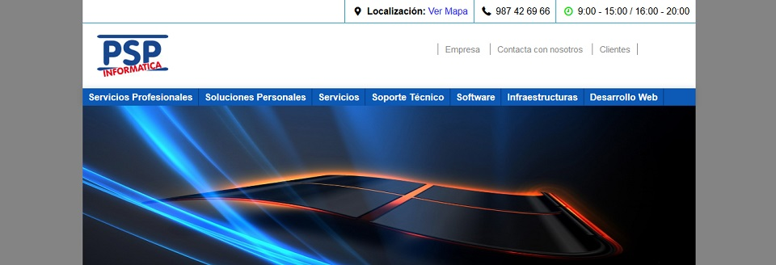

Psp Informática
My first job as a freelance web developer was to develop the main site of an IT Spanish company called PSP-Informática. They wanted a fully responsive site divided into several sections explaining all the services and products that they offered. They also wanted to allow visitors to get in contact with the company through the website using a form.
I fully developed this site from scratch, being me in charge from the very first design to the final deployment. The homepage is a briefing of the whole website content. It contains square shaped divs per section explaining what is the section about. Then the sections itself are displayed into a template designed for that.
About the responsive side of the page, this was the first project I developed taking a mobile first approaching, and I have to admit that the results were truly satisfactory. Adapt and display the content from the mobile version to the desktop version was much easier and natural than the traditional desktop first approach. Since that, I always develop websites using that approach.
As a curiosity, there is a clock on the top of the header which changes the color depending of the time the user visit the page. The time is taken from the server.